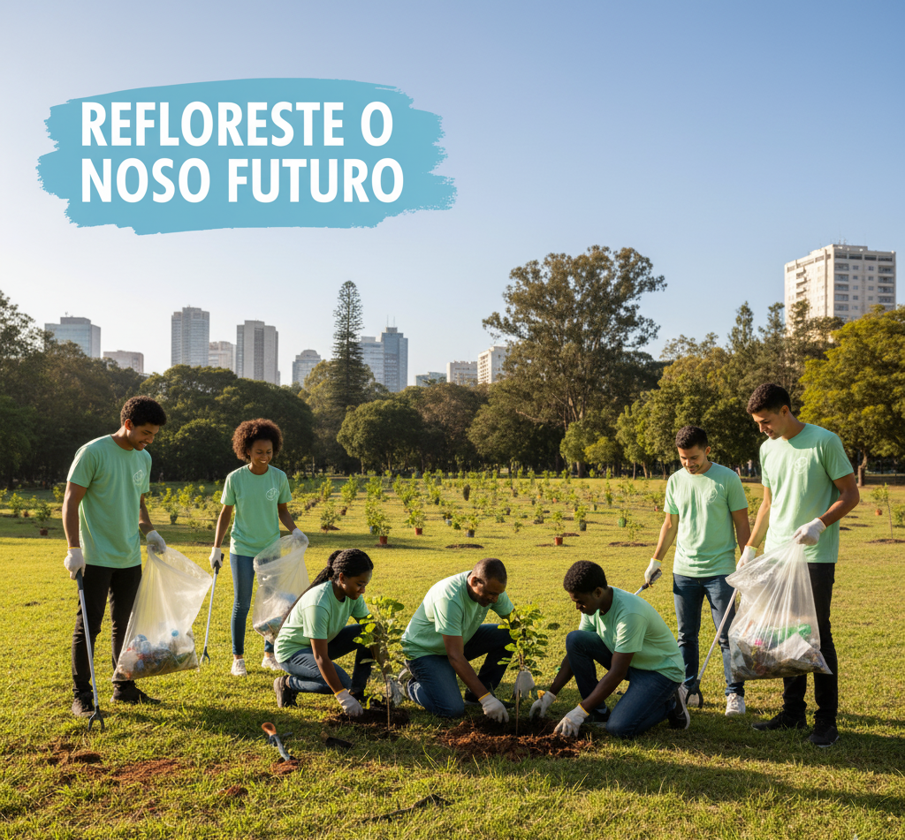
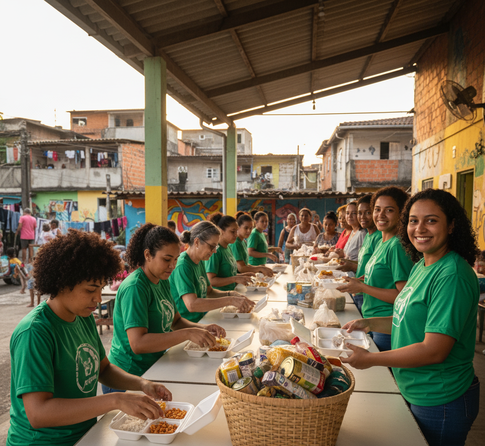
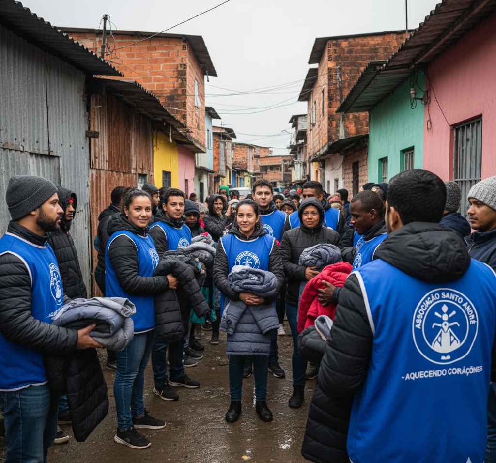

Educação para Todos
Oferecendo aulas, reforço escolar e materiais didáticos a crianças e jovens do Grande ABC, com foco na inclusão educacional.
Conheça os projetos que a Associação Santo André realiza na comunidade do Jardim Santa Cristina e no Grande ABC.
Oferecendo aulas, reforço escolar e materiais didáticos a crianças e jovens do Grande ABC, com foco na inclusão educacional.

Campanhas de reciclagem, plantio de árvores e ações comunitárias para um futuro mais sustentável na região.

Distribuição de alimentos e apoio a famílias em situação de vulnerabilidade na comunidade do Jardim Santa Cristina.

Campanha de arrecadação de roupas e agasalhos para famílias carentes de Santo André e cidades vizinhas — traga seu agasalho e aqueça um coração.
💛 Quer ajudar a transformar vidas na nossa comunidade?
💛💙❤️
Quero Ajudar / Me Cadastrar